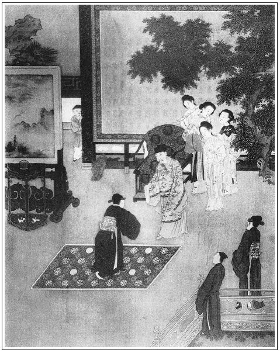

張回此回方正寫太師之惡與趨奉之恥，為世人一哭也。寫桂姐假女之事方完，而西門假子之事乃出，遞映丑絕。吾不知作者有何深惡於太師之假子，而作此以丑其人，下同娼妓之流也。文筆亦太刻矣。
於見太師時夾寫一苗員外，一時便寫為假子者，千百不止也。總是醜詆之辭。必雲揚州苗員外，所以刺西門之心也。
贈歌童者，所重在春鴻、春燕四字也。言你正在勝時，豈知秋去春采，又有別人家一番豪華。舊日韶光易老，甚勿昧昧，及早回頭，猶恐不及也。乃西門不悟，必至死而方休，為後人之所深悲，比比然也，又不特西門一人而已。
寫富貴必寫至相府之富貴，方使西門等員外家，市井氣不言而出。
送鴻迎燕，必接寫在「隔花」一戲之後，正見上回為透露冷字消息，此乃用送鴻迎燕四字，以點其晴，示炎熱有限，繁華不久也。
詞曰：
師表方眷遇，魚水君臣，須信從來少。寶運當千，佳辰餘五，嵩岳誕生元老。帝遣阜安宗社，人仰雍容廊廟。願歲歲共祝眉壽，壽比山高。
──右調《喜遷鶯後》

卻說任醫官看了脈息，依舊到廳上坐下。西門慶便開言道：「不知這病症端的何如？」任醫官道：「夫人這病，原是產後不慎調理，張夾此處方講脈理。因此得來。目下惡路不淨，面帶黃色，飲食也沒些要緊，走動便覺煩勞。依學生愚見，還該謹慎保重。如今夫人兩手脈息虛而不實，按之散大。這病症都只為火炎肝腑，土虛木旺，虛血妄行。若今番不治，後邊一發了不的。」說畢，西門慶道：「如今該用甚藥才好？」任醫官道：「只用些清火止血的藥──黃柏、知母為君，其餘再加減些，吃下看住，就好了。」繡旁圓活得妙。西門慶聽了，就叫書僮封了一兩銀子，送任醫官做藥本，任醫官作謝去了。不一時，送將藥來，李瓶兒屋裡煎服，不在話下。
且說西門慶送了任醫官去，回來與應伯爵說話。伯爵因說：「今日早晨，李三、黃四走來，說他這宗香銀子急的緊，再三央我來求哥。好歹哥看我面，接濟他這一步兒罷。」西門慶道：「既是這般急，我也只得依你了。你叫他明日來兌了去罷。」一面讓伯爵到小卷棚內，留他吃飯。伯爵因問：「李桂兒還在這裡住著哩？東京去的也該來了。」張夾一語緊接。西門慶道：「正是，我緊等著還要打發他往揚州去，敢怕也只在早晚到也。」說畢，吃了飯，伯爵別去。到次日，西門慶衙門中回來，伯爵早已同李智、黃四坐在廳上等。見西門慶回來，都慌忙過來見了。西門慶進去換了衣服，就問月娘取出徐家討的二百五十兩銀子，又添兌了二百五十兩，叫陳敬濟拿了，同到廳上，兌與李三、黃四。因說道：「我沒銀子，因應二哥再三來說，只得湊與你。──我卻是就要的。」李三道：「蒙老爹接濟，怎敢遲延！如今關出這批銀子，一分也不敢動，就都送了來，」於是兌收明，千恩萬謝去了。伯爵也就要去，張夾十兩發故也。被西門慶留下。
正坐的說話，只見平安兒進來報說：「來保東京回來了。」伯爵道：「我昨日就說也該來了。」不一時，來保進到廳上，與西門慶磕了頭。西門慶便問：「你見翟爹麼？李桂姐事情怎樣了？」來保道：「小的親見翟爹。翟爹見了爹的書，隨即叫長班拿帖兒與朱太尉去說，小的也跟了去。朱太尉親吩咐說：『既是太師府中分上，就該都放了。因是六黃太尉送的，難以回他，如乃未到者，俱免提；已拿到的，且監些時。他內官性兒，有頭沒尾。等他性兒坦些，也都從輕處就是了。』」伯爵道：「這等說，連齊香兒也免提了？──造化了這小淫婦兒了！」來保道：「就是祝爹他每，也只好打幾下罷了。罪，料是沒了。」一面取出翟管家書遞上。西門慶看了說道：「老孫與祝麻子，做夢也不曉的是我這裡人情。」張夾十兄弟不如一妓。伯爵道：「哥，你也只當積陰騭罷了。」來保又說：「翟爹見小的去，好不歡喜，問爹明日可與老爺去上壽？小的不好回說不去，只得答應：『敢要來也。』翟爹說：『來走走也好，我也要與你爹會一會哩。』」西門慶道：「我到也不曾打點自去。既是這等說，只得要去走遭了。」因吩咐來保：「你辛苦了，且到後面吃些酒飯，歇息歇息。遲一兩日，還要趕到揚州去哩。」來保應諾去了。西門慶就要進去與李桂姐說知，向伯爵道：「你坐著，我就來。」伯爵也要去尋李三、黃四，乘機說道：「我且去著，再來罷。」一面別去。
西門慶來到月娘房裡，李桂姐已知道信了，忙走來與西門慶、月娘磕頭，謝道：「難得爹娘費心，救了我這一場大禍。拿甚麼補報爹娘！」繡旁口角甜甚。月娘道：「你既在咱家恁一場，有些事兒，不與你處處，卻為著甚麼來？」桂姐道：「俺便賴爹娘可憐救了，只造化齊香兒那小淫婦兒，他甚相干？連他都饒了。他家賺錢賺鈔，帶累俺們受驚怕，俺每倒還只當替他說了個大人情，不該饒他才好！」繡眉自得免已為萬幸，又氣不憤免了別人，寫婦人窄小肚腸如見。張夾已不自認情矣。西門慶笑道：「真造化了這小淫婦兒了。」說了一回，桂姐便要辭了家去，道：「我家媽還不知道這信哩，我家去說聲，免得他記掛，再同媽來與爹娘磕頭罷。」西門慶道：「也罷，我不留你，你且家去說聲著。」月娘道：「桂姐，你吃了飯去。」桂姐道：「娘，我不吃飯了。」一面又拜辭西門慶與月娘眾人。臨去，西門慶說道：「事便完了，你今後，這王三官兒也少招攬他了。」繡旁畢竟道破。繡眉分明醋話，卻做正景說，妙甚。張旁如畫。張夾心事。桂姐道：「爹說的是甚麼話，還招攬他哩！再要招攬他，就把身子爛化了。就是前日，也不是我招攬他。」繡旁挽回一語，妙。月娘道：「不招攬他就是了，又平白說誓怎的？」張夾映月娘。一面叫轎子，打發桂姐去了。西門慶因告月娘說要上東京之事。月娘道：「既要去，須要早打點，省得臨時促忙促急。」西門慶道：「蟒袍錦繡、金花寶貝，上壽禮物，俱已完備，倒只是我的行李不曾整備。」月娘道：「行李不打緊。」西門慶說畢，就到前邊看李瓶兒去了。到次日，坐在卷棚內，叫了陳敬濟來，看著寫了蔡御史的書，交與來保，又與了他盤纏，叫他明日起早趕往揚州去，不題。
倏忽過了數日，看看與蔡太師壽誕將近，只得擇了吉日，吩咐琴童、玳安、書僮、畫童四個小廝跟隨，各各收拾行李。張夾不漏。月娘同玉樓、金蓮眾人，張夾瓶兒病矣。將各色禮物並冠帶衣服應用之物，共裝了二十餘扛。頭一日晚夕，妻妾眾人擺設酒餚和西門慶送行。吃完酒，就進月娘房裡宿歇。次日，把二十扛行李先打發出門，又發了一張通行馬牌，仰經過驛遞起夫馬迎送。各各停當，然後進李瓶兒房裡來，看了官哥兒，與李瓶兒說道：「你好好調理。要藥，叫人去問任醫官討。我不久便來家看你。」那李瓶兒閣著淚道：「路上小心保重。」直送出廳來，和月娘、玉樓、金蓮打伙兒送了出大門。西門慶乘了涼轎，張旁是六月。四個小廝騎了頭口，望東京進發。迤邐行來，免不得朝登紫陌，夜宿郵亭，繡眉寫得天下皆然。一路看了些山明水秀，相遇的無非都是各路文武官員進京慶賀壽誕，生辰扛不計其數。張夾寫太師。約行了十來日，早到東京。進了萬壽城門，那時天色將晚，趕到龍德街牌樓底下，就投翟家屋裡去住歇。
那翟管家聞知西門慶到了，忙出來迎接，各敘寒暄。吃了茶，西門慶叫玳安將行李一一交盤進翟家來。翟謙交府干收了，就擺酒和西門慶洗塵。不一時，只見剔犀官桌上，擺上珍羞美味來，只好沒有龍肝鳳髓罷了，其餘般般俱有，便是蔡太師自家受用，也不過如此。當值的拿上酒來，翟謙先滴了天，然後與西門慶把盞。西門慶也回敬了。兩人坐下，糖果按酒之物，流水也似遞將上來。張夾為太師一襯。酒過兩巡，西門慶便對翟謙道：「學生此來，單為與老太師慶壽，聊備些微禮孝順太師，想不見卻。只是學生久有一片仰高之心，欲求親家預先稟過：但得能拜在太師門下做個干生子，便也不枉了人生一世。繡旁好大志。不知可以啟口麼？」張旁用筆刻甚，令此輩何處生活？翟謙道：「這個有何難哉！我們主人雖是朝廷大臣，卻也極好奉承。今日見了這般盛禮，不惟拜做干子，定然允從，自然還要升選官爵。」繡眉蔡太師為人，數語道盡。西門慶聽說，不勝之喜。飲夠多時，西門慶便推不吃酒了。翟管家道：「再請一杯，怎的不吃了？」西門慶道：「明日有正經事，不敢多飲。」再四相勸，只又吃了一杯。
翟管家賞了隨從人酒食，就請西門慶到後邊書房裡安歇。排下暖床綃帳，銀鉤錦被，香噴噴的。一班小廝扶侍西門慶脫衣上床。獨宿──西門慶一生不慣，那一晚好難捱過。巴到天明，正待起身，那翟家門戶重重掩著。直挨到巳牌時分，才有個人把鑰匙一路開將出來。張夾又襯太師。隨後才是小廝拿手巾香湯進書房來。西門慶梳洗完畢，只見翟管家出來和西門慶廝見，坐下。當值的就托出一個朱紅盒子來，裡邊有三十來樣美味，一把銀壺斟上酒來吃早飯。翟謙道：「請用過早飯，學生先進府去和主翁說知，然後親家搬禮物進來。」西門慶道：「多勞費心！」酒過數杯，就拿早飯來吃了，收過家活。翟管家道：「且權坐一回，學生進府去便來。」
翟謙去不多時，就忙來家，繡旁宛然。向西門慶說：「老爺正在書房梳洗，外邊滿朝文武官員都伺候拜壽，未得廝見哩。學生已對老爺說過了，如今先進去拜賀罷，省的住回人雜。學生先去奉候，親家就來罷了。」說畢去了。西門慶不勝歡喜。便教跟隨人拉同翟家幾個伴當，先把那二十扛金銀緞疋抬到太師府前，一行人應聲去了。西門慶即冠帶，乘了轎來。只見亂哄哄，挨肩擦背，都是大小官員來上壽的。西門慶遠遠望見一個官員，也乘著轎進龍德坊來。西門慶仔細一看，卻認的是故人揚州苗員外。不想那苗員外也望見西門慶，兩個同下轎作揖，敘說寒溫。原來這苗員外也是個財主，張夾一個也是。他身上也現做著散官之職，張夾二個也做。向來結交在蔡太師門下，那時也來上壽，張夾三個也來。恰遇了故人。當下，兩個忙匆匆路次話了幾句，問了寓處，分手而別。繡眉忽插入一苗員外，似甚無味，蓋欲見以權門為壟斷者，不獨一西門慶也。觀數「也」字自明。張夾百忙插入。西門慶來到太師府前，但見：
堂開綠野，閣起凌煙。門前寬綽堪旋馬，閥閱嵬峨好豎旗。錦繡叢中，風送到畫眉聲巧；金銀堆裡，日映出琪樹花香。左右活屏風，一個個夷光紅拂；滿堂死寶玩，一件件周鼎商彝。室掛明珠十二，黑夜裡何用燈油；門迎珠履三千，白日間盡皆名士。張夾罵盡名士。九州四海，大小官員，都來慶賀；六部尚書，三邊總督，無不低頭。
正是：
除卻萬年天子貴，只有當朝宰相尊。
西門慶恭身進了大門，翟管家接著，只見中門關著不開，繡旁寫得到。官員都打從角門而入。西門慶便問：「為何今日大事，卻不開中門？」張夾草氣。翟管家道：「中門曾經官家行幸，因此人不敢走。」西門慶和翟謙進了幾重門，門上都是武官把守，一些兒也不混亂。張旁是西門眼中。
見了翟謙，一個個都欠身問管家：「從何處來？」翟管家答道：「捨親打山東來拜壽老爺的。」說罷，又走過幾座門，轉幾個彎，無非是畫棟雕樑，金張甲第。隱隱聽見鼓樂之聲，張旁是西門耳中。如在天上一般。西門慶又問道：「這裡民居隔絕，那裡來的鼓樂喧嚷？」張夾草氣。翟管家道：「這是老爺教的女樂，一班二十四人，都曉得天魔舞、霓裳舞、觀音舞。但凡老爺早膳、中飯、夜宴，都是奏的。如今想是早膳了。」繡眉西門慶家居亦可謂富貴矣。今以此相形，便覺純是市井暴發戶景象，富貴寧有極耶！隱隱寫出。西門慶聽言未了，又鼻子裡覺得異香馥馥，樂聲一發近了。張旁是西門鼻中。翟管家道：「這裡與老爺書房相近了，腳步兒放鬆些。」張旁是西門腳步。張夾西門氣象如活。
轉個迴廊，只見一座大廳，如寶殿仙宮。廳前仙鶴、孔雀種種珍禽，又有那瓊花、曇花、佛桑花，四時不謝，開的閃閃爍爍，應接不暇。張旁未見慣人，確有如此。西門慶還未敢闖進，交翟管家先進去了，然後挨挨排排走到堂前。張旁大力宏才，方能寫出。只見堂上虎皮交椅上坐一個大猩紅蟒衣的，是太師了。屏風後列有二三十個美女，張夾比六房何如。一個個都是宮樣妝束，執巾執扇，捧擁著他。翟管家也站在一邊。西門慶朝上拜了四拜，蔡太師也起身，就絨單上回了個禮。──這是初相見了。落後，翟管家走近蔡太師耳邊，暗暗說了幾句話下來，西門慶理會的是那話了，張旁妙絕。又朝上拜四拜，蔡太師便不答禮。──這四拜是認干爺，因此受了。繡眉獻媚者與受媚者寫得默默會心，最有情景。西門慶開言便以父子稱呼道：「孩兒沒恁孝順爺爺，今日華誕，特備的幾件菲儀，聊表千里鵝毛之意。願老爺壽比南山。」蔡太師道：「這怎的生受！」便請坐下。當值的拿了把椅子上來，西門慶朝上作了個揖道：「告坐了。」就西邊坐地喫茶。翟管家慌跑出門來，張旁如畫。叫抬禮物的都進來。須臾，二十扛禮物擺列在階下。揭開了涼箱蓋，呈上一個禮目：大紅蟒袍一套、官綠龍袍一套、漢錦二十疋、蜀錦二十疋、火浣布二十疋、西洋布二十疋，其餘花素尺頭共四十疋、獅蠻玉帶一圍、金鑲奇南香帶一圍、玉杯犀杯各十對、赤金攢花爵杯八隻、明珠十顆，又另外黃金二百兩，送上蔡太師做贄見禮。蔡太師看了禮目，又瞧見抬上二十來扛，心下十分歡喜，說了聲「多謝！」便叫翟管家收進庫房去了。一面吩咐擺酒款待。西門慶因見他忙沖沖，就起身辭蔡太師。太師道：「既如此，下午早早來罷。」西門慶又作個揖，起身出來。蔡太師送了幾步，便不送了。繡旁肖。西門慶依舊和翟管家同出府來。翟管家府內有事，也作別進去。
西門慶竟回到翟家來，脫下冠帶，已整下午飯，吃了一頓。回到書房，打了個盹，張夾寫盡適才一片精神迎合之處。恰好蔡太師差舍人邀請赴席，西門慶謝了些扇金，著先去了。即便重整冠帶，又叫玳安封下許多賞封，做一拜匣盛了，跟隨著四個小廝，復乘轎望太師府來。蔡太師那日滿朝文武官員來慶賀的，各各請酒。自次日為始，分做三停：第一日是皇親內相，第二日是尚書顯要、衙門官員，第三日是內外大小等職。只有西門慶，一來遠客，二來送了許多禮物，蔡太師到十分歡喜，因此就是正日獨獨請他一個。見西門慶到了，忙走出軒下相迎。西門慶再四謙遜，讓：「爺爺先行。」自家屈著背，輕輕跨入檻內，蔡太師道：「遠勞駕從，又損隆儀。今日略坐，少表微忱。」西門慶道：「孩兒戴天履地，全賴爺爺洪福，些小敬意，何足掛懷！」兩個喁喁笑語，真似父子一般。繡眉當勢利時。一種親愛情景，亦易動人，故舉世慕勢利也。張夾不謂起先層層寫來的一個太師，卻如此抹卻。二十四個美女，一齊奏樂，府干當值的斟上酒來。蔡太師要與西門慶把盞，西門慶力辭不敢，只領的一盞，立飲而盡，隨即坐了桌席。西門慶叫書僮取過一隻黃金桃杯，斟上一杯，滿滿走到蔡太師席前，雙膝跪下道：「願爺爺千歲！」蔡太師滿面歡喜道：「孩兒起來。」接過便飲個完。西門慶才起身，依舊坐下。那時相府華筵，珍奇萬狀，都不必說。西門慶直飲到黃昏時候，拿賞封賞了諸執役人，才作謝告別道：「爺爺貴冗，孩兒就此叩謝，後日不敢再來求見了。」出了府門，仍到翟家安歇。
次日，要拜苗員外，著玳安跟尋了一日，卻在皇城後李太監房中住下。玳安拿著帖子通報了，苗員外來出迎道：「學生正想個知心朋友講講，恰好來得湊巧。」就留西門慶筵燕。西門慶推卻不過，只得便住了。當下山餚海錯不記其數。又有兩個歌童，生的眉清目秀，頓開喉音，唱幾套曲兒。西門慶指著玳安、琴童向苗員外說道：「這班蠢材，只會吃酒飯，怎地比的那兩個！」苗員外笑道：「只怕伏侍不的老先生，若愛時，就送上也何難！」西門慶謙謝不敢奪人之好。飲到更深，別了苗員外，依舊來翟家歇。那幾日內相府管事的，各各請酒，留連了八九日。西門慶歸心如箭，便叫玳安收拾行李。翟管家苦死留住，只得又吃了一夕酒，重敘姻親，極其眷戀。張夾不漏。次日早起辭別，望山東而行。一路水宿風餐，不在話下。
且說月娘家中，自從西門慶往東京慶壽，姊妹每望眼巴巴，各自在屋裡做些針指，通不出來閒耍。只有潘金蓮打扮的如花似玉，喬模喬樣，在丫鬢伙裡，或是猜枚，或是抹牌，說也有，笑也有，狂的通沒些成色。嘻嘻哈哈，也不顧人看見，只想著與陳敬濟勾搭。每日只在花園雪洞內踅來踅去，指望一時湊巧。敬濟也一心想著婦人，不時進來尋撞，撞見無人便調戲，親嘴咂舌做一處，只恨人多眼多，不能盡情歡會。張眉此處又將二人一寫，映後文放膽，皆由月娘不能謹之於始耳。正是：
雖然未入巫山夢，卻得時逢洛水神。
一日，吳月娘、孟玉樓、李瓶兒同一處坐地，只見玳安慌慌跑進門來，見月娘眾人磕了頭，報道：「爹回來了。」月娘便問：「如今在那裡？」玳安道：「小的一路騎頭口，拿著馬牌先行，因此先到家。爹這時節，也差不上二十里遠近了。」月娘道：「你曾吃飯沒有？」玳安道：「從早上吃來，卻不曾吃中飯。」月娘便吩咐整飯伺候，一面就和六房姊妹同夥兒到廳上迎接。正是：
詩人老去鶯鶯在，公子歸時燕燕忙。
妻妾每在廳上等候多時，西門慶方到門前下轎了，眾妻妾一齊相迎進去。西門慶先和月娘廝見畢，然後孟玉樓、李瓶兒、潘金蓮依次見了，各敘寒溫。落後，書僮、琴童、畫童也來磕了頭，自去廚下吃飯。西門慶把路上辛苦並到翟家住下、感蔡太師厚情請酒並與內相日日吃酒事情，備細說了一遍。張夾比齊人何如？因問李瓶兒：「孩子這幾時好麼？你身子吃的任醫官藥，有些應驗麼？我雖則往東京，一心只吊不下家裡。」李瓶兒道：「孩子也沒甚事，我身子吃藥後，略覺好些。」月娘一面收好行李及蔡太師送的下程，張旁珍重如此。一面做飯與西門慶吃。到晚又設酒和西門慶接風。西門慶晚夕就在月娘房裡歇了。兩個是久旱逢甘雨，他鄉遇故知。歡愛之情，俱不必說。
次日，陳敬濟和大姐也來見了，說了些店裡的帳目。張夾不漏。應伯爵和常峙節打聽的來家，都來探望。西門慶出來相見畢，兩個一齊說：「哥一路辛苦。」西門慶便把東京富麗的事情及太師管待情分，備細說了一遍。兩人只顧稱羨不已。
當日，西門慶留二人吃了一日酒。常峙節臨起身向西門慶道：「小弟有一事相求，不知哥可照顧麼？」說著，只是低了臉，半含半吐。繡眉十弟兄內，惟常二尚有良心。西門慶道：「但說不妨。」常峙節道：「實為住的房子不方便，待要尋間房子安身，卻沒有銀子。因此要求哥周濟些兒，日後少不的加些利錢送還哥。」西門慶道：「相處中說甚利錢！只我如今忙忙的，那討銀子？且待韓夥計貨船來家，自有個處。」說罷，常峙節、應伯爵作謝去了，不在話下。
且說苗員外自與西門慶相會，在酒席上把兩個歌童許下。不想西門慶歸心如箭，不曾別的他，竟自歸來。苗員外還道西門慶在京，差伴當來翟家問，才曉得西門慶家去了。苗員外自想道：「君子一言，快馬一鞭。我既許了他，怎麼失信！」於是叫過兩個歌童吩咐道：「我前日請山東西門大官人，曾把你兩個許下他。我如今就要送你到他家去，你們早收拾行李。」那兩個歌童一齊跪告道：「小的每伏侍的員外多年，員外不知費盡多少心力，教的俺每這些南曲，卻不留下自家歡樂，怎地到送與別人？」說罷，撲簌簌掉下淚來。那員外也覺慘然不樂，說道：「你也說的是，咱何苦定要送人？只是：『人而無信，不知其可也。』──那孔聖人說的話怎麼違得！張夾也知孔聖人違不得。如今也由不得你了，待咱修書一封，差人送你去，繡眉西門慶施予結交，人人背去，忽劈空幻出一苗員外，認真信義，亦大可笑。不知造化錯綜之妙正在此，當與韓愛姐守節參看。教他好生看覷你就是了。」兩個歌童違拗不過，只得應諾起來。苗員外就叫那門管先生寫著一封書信，寫那相送歌童之意。又寫個禮單兒，把些尺頭書帕封了，差家人苗實繼書，護送兩個歌童往西門慶家來。兩個歌童灑淚辭謝了員外，翻身上馬，迤邐同望山東大道而來。有日到了清河縣，三人下馬訪問，一直逕到縣牌坊西門慶家府裡投下。
卻說西門慶自從東京到家，每日忙不迭，送禮的，請酒的，日日三朋四友，以此竟不曾到衙門裡去。那日稍閒無事，才到衙門裡升堂畫卯，把那些解到的人犯，同夏提刑一一審問一番。審問了半日，公事畢，方乘了一乘涼轎，幾個牢子喝道，簇擁來家。只見那苗實與兩個歌童已是候的久了，就跟著西門慶的轎子，隨到前廳，跪下稟說：「小的是揚州苗員外有書拜候老爹。」隨將書並禮物呈上。西門慶連忙說道：「請起來。」一面打開副啟，細細看了。見是送他歌童，心下喜之不勝，說道：「我與你員外意外相逢，不想就蒙你員外情投意合。酒後一言，就果然相贈，又不憚千里送來。你員外真可謂千金一諾矣。難得，難得！」兩個歌童從新走過，又磕了四個頭，說道：「員外著小的們伏侍老爹，萬求老爹青目！」西門慶道：「你起來，我自然重用。」一面叫擺酒飯，管待苗實並兩個歌童；一面整辦厚禮──綾羅細軟，修書答謝員外；一面就叫兩個歌童，在於書房伺候。不想，韓道國老婆王六兒，因見西門慶事忙，要時常通個信兒，沒人往來，算計將他兄弟王經──才十五六歲，也生得清秀──送來伏侍西門慶，也是這日進門。張夾又照管王六兒。西門慶一例收下，也叫在書房中伺候。
西門慶正在廳上分撥，忽伯爵走來。西門慶與他說知苗員外送歌童之事，就叫玳安裡面討出酒菜兒來，留他坐，就叫兩個歌童來唱南曲。那兩個歌童走近席前，並足而立，手執檀板，唱了一套《新水令》「小園昨夜放江梅」，張夾蓋送鴻迎燕乃春時，而春梅已欲放矣。西門韶華將盡，守備府中春色將來矣。此文字大過接處。果然是響遏行雲，調成白雪。伯爵聽了，歡喜的打跌，贊說道：「哥的大福，偏有這些妙人兒送將來。也難為這苗員外好情。」西門慶道：「我少不得尋重禮答他。」一面又與這歌童起了兩個名：一個叫春鴻，一個叫春燕。又叫他唱了幾個小詞兒，二人吃一回酒，伯爵方才別去。正是：
風花弄影新鶯囀，俱是筵前歌舞人。
文回文禹門云：驕人之情形如彼，諂人之光景如此。要寫得像兩人，不像一人，方為細密。要寫得是一人，不是兩人，方為融洽。西門慶此番慶壽，便住翟雲峰家，可謂已得門路矣。非然者，以蔡太師之威權，滿朝文武希榮趨勢者，除去不附蔡諸公，當亦不下千餘人。何有一清河小武官，獨得與太師私見而能少獻其諛詞媚態哉？有雲峰一引，直與家生子一般，便不覺唐突。
此書以西門慶作主，不得不提起筆來寫，若太師慶壽一層，亦不過略為點染而已。其間又夾一苗員外，不言其名，但說是揚州住，又與西門慶素好。彼何人哉？哥童之贈，不在當時，而在歸後，閃閃爍爍，與鬼魅何殊？
按：此評寫於光緒五年（1879）五月十六日。此評與五十六回回評，又見於三十八回後。顯系作者寫過兩次，文字稍有異同。